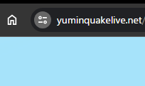
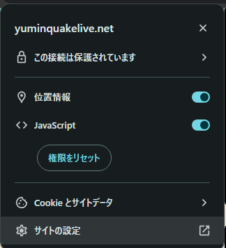
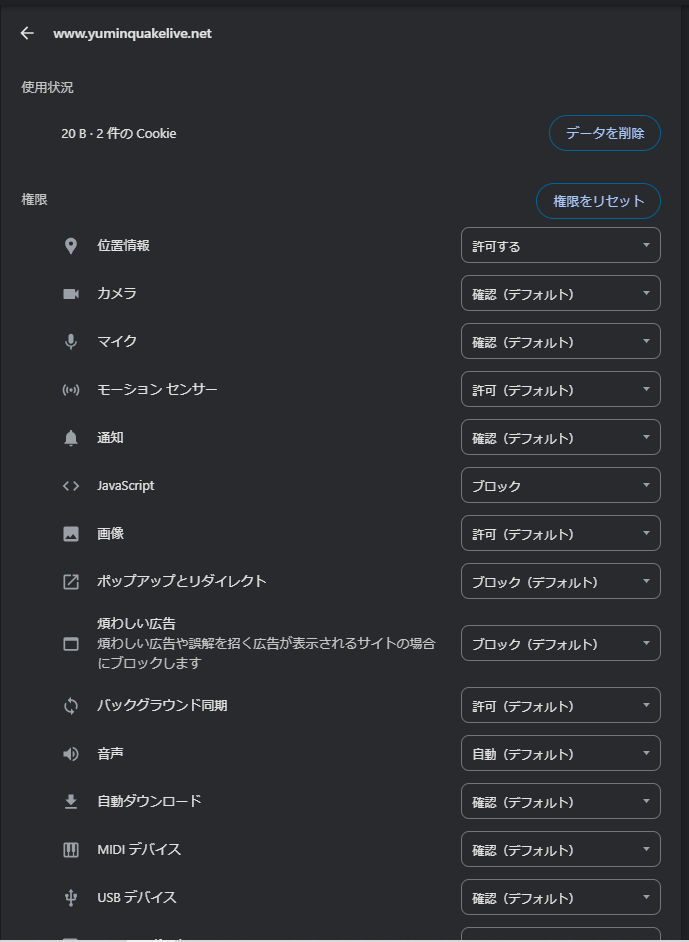
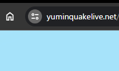
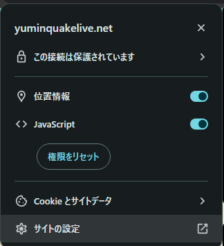
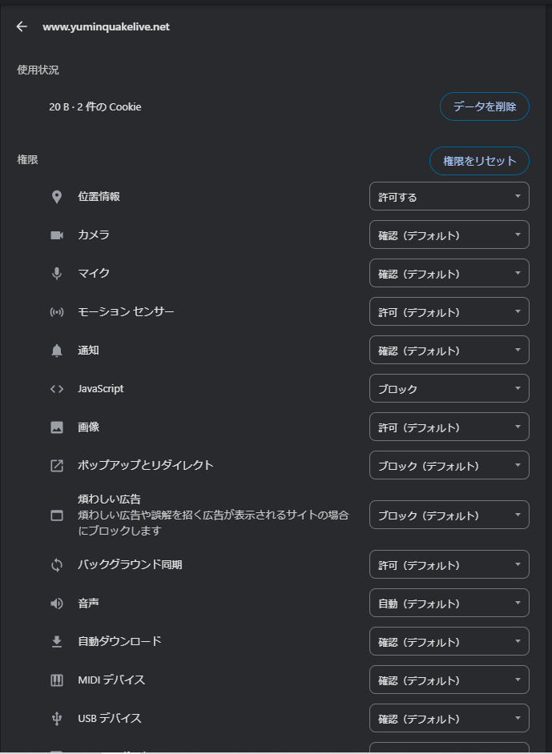

1.左上のサイト情報を表示を押す
2.サイト設定を押す
3.サイト設定が表示される
4.JavaScriptのプルダウンを押し、「ブロック」から「許可（デフォルト）」に変更する

5.再読み込みをする

GoogleChromeでJavScriptを有効化する方法は左上の「サイト情報を表示」の中にある
「サイト設定」から「JavaScript」のプルダウンを「ブロック」から「許可（デフォルト）」
に変更後対象ページを再読み込みしたら通常通りサイトが閲覧できます。
1.左上のサイト情報を表示を押す
2.サイト設定を押す
3.サイト設定が表示される
4.JavaScriptのプルダウンを押し、「ブロック」から「許可（デフォルト）」に変更する
5.再読み込みをする